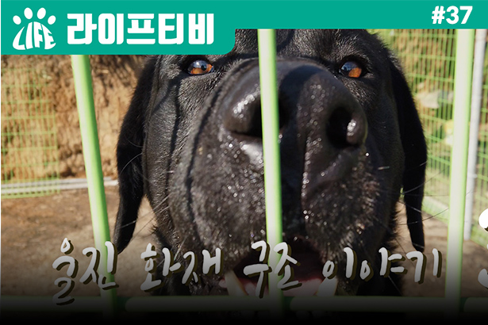
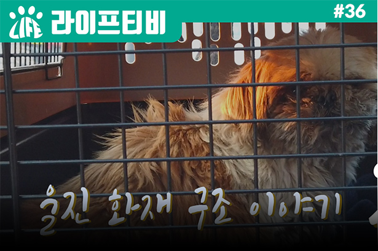
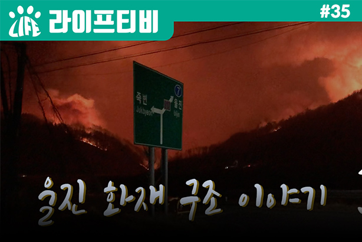
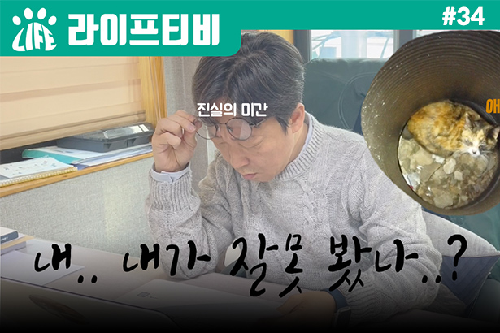
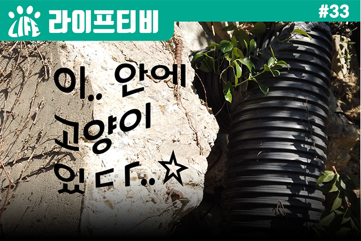
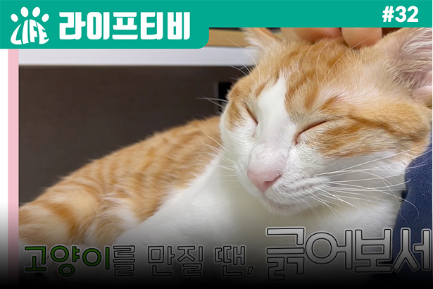

MAIN Activities
" We create life to make a world where animals and people are happy . "
LIFE TV We share the value of life through video data.
-

Crying Fire Rescue Story
Part 3: Shichu Meets the Master!Life left for the scene of the Wooljin fire,
READMORE
The next morning
Life to visit the Gormok, where they are told
that the damage from wildfires is severe.
All that was found there was a puppy left in
the burned down house..!
... -

Crying Fire Rescue
Story Part 2: The Crying Gorge, which was heavily damaged during the night..!Life leaves for the scene of a raging wildfire, and finds the animals as the night goes on and the flames soar again.
READMORE
whether the animals are being cared for prior to rescue,
To check if the owner is nearby.
Since
Life visits the Gormok the next morning, where he was told that the damage from the wildfires was severe.
All that was found there was a puppy left in the burned down house..! -

Crying Fire Rescue
Story Part 1: Surviving AnimalsA weeping wildfire called the worst of all time..
READMORE
Until recently, the damage continued and many of you suffered,
It was not only the people who were affected, but also the animals.
We will tell you the story of the rescue of Life who left for the very scene of the Woollen wildfire. -

West Dong Drainage
Pipe Cat Rescue Operation! Part 2 (Cookie video?? got Wagjan??)Remember the incident in which Life rescued a cat trapped in a drain pipe?
READMORE
But the structure is not the end of 1 shot..! What else happened after that?
The rescue is not over until it is over!!
Rescue tells the backstory of that-!
And there is also a surprise cookie video at the end of the video, so I hope you guys will watch it a lot ^^ ?? -

West Dong Drainage
Pipe Cat Rescue Operation! Part 1 (Twist on the kitten..?)Kittens
READMORE
Receiving a tip that you are trapped in a drainage pipe
The Life Rescue Team that has been dispatched!
It's a weekend, so the structure suffers,
Will a cat that has been locked up for ten days be safe?
By the way, it is said that there is a reversal in kittens..!! Owing?
There are also 2 shots, so please look forward to it~ -

When you touch a
cat, scratch it!Today, we've brought you a video that everyone can watch with excitement!
READMORE
There's cuteness~ There's coziness~ Everything is complete with your attention. Wall.☆ Specially the representative knee of Life appeared in "Nego" (^oxo^)~
If you're wondering how to scratch a cat,
Go to YouTube and search for "LifeTV":)
Life dreams of a world in which animals and people coexist.